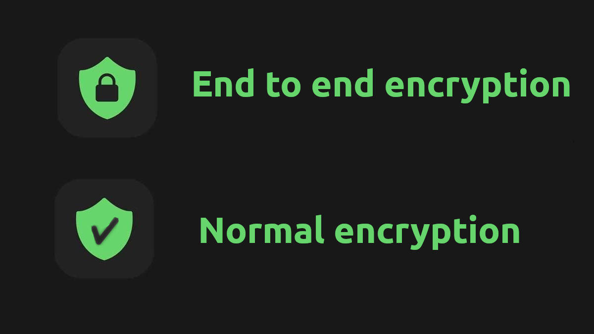

How to Make chat apps more private
What is encryption?
Encryption is a process that scrambles your data into a mathematical puzzle and make them impossible to understand during transaction. So hackers cant read or identify your messages while sending.

Signal

Signal is the gold standard for private messaging apps at the moment. It is free and open source. Using end-to-end encryption as the default, Signal keeps all forms of communication on the platform just about as safe as they can be. These features include one-on-one chat, voice, and video calls, as well as group chats in all of those forms.
Viber

Viber is another great private messaging app. It offers end-to-end
encryption as the default for its one-on-one and group chats, including
text, voice, and video. Do note though, that communities and
channels on Viber are not end-to-end encrypted, but you
should avoid sharing personal information in those places either way.
On the less positive side, when you join a Viber group, your
phone number will be visible to everybody. Also, Viber is
known to be used by spammers to blast messages and potential viruses.
By default they also collect personalized data which they use
to sell ads and monetize that way, but they have a range of
options you can turn off to prevent this. Visit the “Personal Data”
section of the app’s privacy options and review how your data is used.
Also, you may request and/or delete your data from Viber’s servers.

WhatsApp

The ever popular WhatsApp messenger is not known to be the most secure platform (part of Facebook), so it has lost a lot of favor with more security-conscious users, most of which have moved to other apps like Signal, Telegram or paid app Threema. All of that aside, it does still offer end-to-end encryption as the default for all of its private chat applications. These include messages and calls, both the group and one-on-one versions, as well as any photos or files you send on the app.
What is not private anymore are communications with businesses that are also on Facebook. These communications will share data with both Facebook and the business you’re in communication with.
Facebook Messenger

Facebook Messenger has a shady past in regards to user privacy. From admitting that they scan user messages and files, to forcing the app’s installation with the Facebook app, seemingly to slip more permissions by the user. So avoid using this app.
Telegram

Video and voice calls are encrypted by default on Telegram end-to-end, however texts and file sharing are not. Telegram’s default messaging mode is only encrypted between the sender and Telegram servers
you can initiate a “Secret Chat.” What this means is that the messages in that chat are end-to-end encrypted, and the sender has complete control over whether or not the receiver can keep those messages that they exchange. You can set parameters over how long the message exists after it’s been read, or even delete it from both chat participants' apps at once. These secret chats are not stored to Telegram’s cloud either, so the messages are as secure as can be, so long as your device isn’t compromised.
Discord

The platform does not offer end-to-end encryption for text or audio/video communication. While your data is encrypted in transit to Discord servers, it is stored on said servers. Even when you use the app’s privacy settings to disable their ability to “Use data to improve Discord,” they still collect this data and store it in their database.
If you find yourself using this app, be careful about any sensitive personal information you transmit.

Zoom

Zoom added the ability to enable end-to-end encryption for your meetings, and you can even set it as the default type of encryption for your Zoom organization (they still call it a "technical preview"). You can verify this setting is on by checking for an icon of a padlock inside of a green shield in the top-left corner of your meeting.
